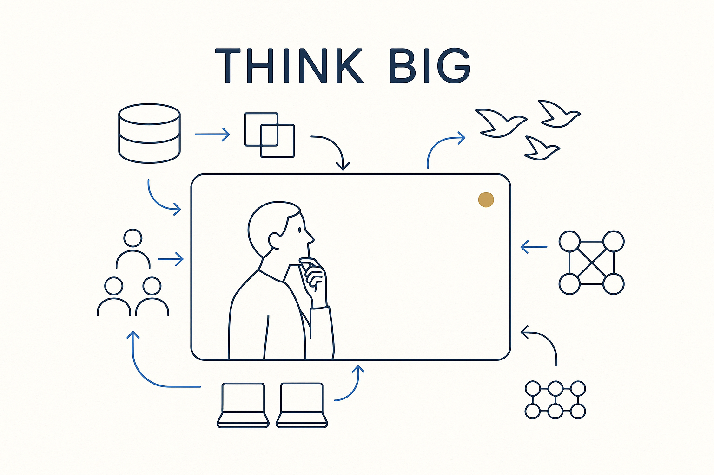

Model at real scale — beyond the single feature, always account for the major parallel processes running through a data landscape: new and changing sources, mergers, migrations, platform shifts, volatile teams, mesh.

> Model at real scale — beyond the single feature, always account for the major parallel processes running through a data landscape: new and changing sources, mergers, migrations, platform shifts, volatile teams, mesh.
Thinking big is refusing to model as if the feature in front of you were the only thing happening. In any real data landscape there is a great deal going on at once. Beyond building new functionality and adapting existing data flows to new business requirements, there are always major parallel processes you have to account for: new data sources, changing data sources, company mergers (integrating models and sources), migrations, platform changes driven by things like sovereignty requirements, highly volatile teams, offshore and near-shore teams, shifts in methodology, data mesh, data products. A model that ignores them is correct on paper and wrong in practice.
Thinking big is not the opposite of decomposition; it is what tells you *what* to decompose. You hold the whole landscape in view — all the moving processes — and then break the work into parts that still fit that bigger picture. Miss the scale and you optimize one flow while a migration or a merger quietly invalidates it.
Handling all of this at once requires being genuinely planmatig — systematic, structured, intelligent, focused and dedicated. That is a different way of working, and it is the reason Breakthrough Modeling is also, honestly, extreme modeling: modeling under real, concurrent complexity rather than in a tidy demo.
Where it lives: the signature principle of Breakthrough Modeling — model the whole landscape, not the single flow.